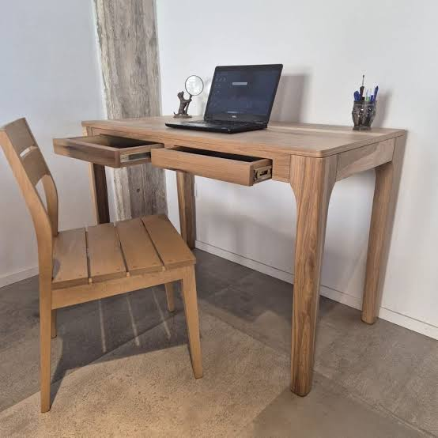
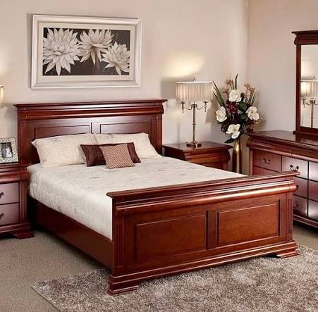
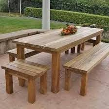

Muebles de Diseño y Calidad
Cada pieza es fabricada pensando en la armonía de tu hogar.
1. Escritorios y Estaciones de Trabajo
Nuestros escritorios están diseñados para maximizar la productividad sin sacrificar la estética. Desde elegantes mesas de oficina en madera maciza hasta estaciones modernas con gestión de cables oculta, ideales para el hogar o el entorno corporativo.

2. Camas y Cabeceros
El descanso merece una estructura sólida y confiable. Fabricamos bases de cama con refuerzos estructurales, camas con gavetas inferiores para optimizar el almacenamiento y cabeceros tapizados o de madera tallada que se convierten en la pieza central de tu dormitorio.

3. Mesas de Comedor y de Centro
Puntos de encuentro esenciales en cualquier hogar. Nuestras mesas combinan robustez con acabados de alta calidad que resaltan la veta natural de la madera, tratadas para resistir la humedad y el calor del uso diario.
